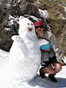
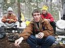
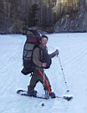
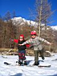
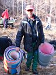

don`t worry, Be Happy !

|
|
don`t worry, Be Happy !
|
|
|
29, 30, 1 мая 2006. Белый Иркут, Мунку-Сардык Понедельник 1.05.06 Встал пораньше, вылез из палатки, а зачем спрашивается? – небо молоко, снег валит на радость доскерам, а на восхождение все настроение пропало идти. Да еще и ночевка на кривом месте – организм просил продолжение сна. Завалился в теплый спальник. Проснулся, солнце выглядывает сквозь облака. Что за напасть. Ну да время упущено, настроение пропало заходческое. Решили сходить с Аней за саган-далёй по Мугувеку. Пока варили рисовый супчик да чай, стал просыпаться голодный народ. Мимо протопали наши слюдянцы с планами дойти до озера, Серега с ними весь обгорелый в черных очках, глаза попортил вчера. Порубали супчик, да стали собираться. Взяли на пробу Лешкины кошки и ледоруб. Распогодилось, солнечно и тепло.      Набиваем машины, вроде все вошли, выезжаем с Белого Иркута вместе с остальным народом. На пограничном посту проверяют паспорта слегка, и едем дальше. Горы на закате красивые, массиву Мунку-Сардык делаем ручкой и благодарим за хороший отдых! До встречи в следующем году!
Приехали в Слюдянию, выгрузились-перегрузились у Барышниковых, Сергей довез Аню, Лешку и Вовку ко мне. Время 3 ночи, переписали фоты с трех фотиков, пивнули чайку, проводил парней на утренний электрон на 4:15. Часа полтора-два поспать и все, мне пора на работу, Аня в Байкальск поехала. Вот и весь сказ про мое первое знакомство с классикой
жанра ходячего народа – Белый Иркут – Мугувек – Мунку-Сардык. Знакомство
познавательное и вполне удачное!
Май 2006. Белокрылов А.Ю. Слюдянка. |
НЕБО-ГОРЫ-ОБЛАКА
|